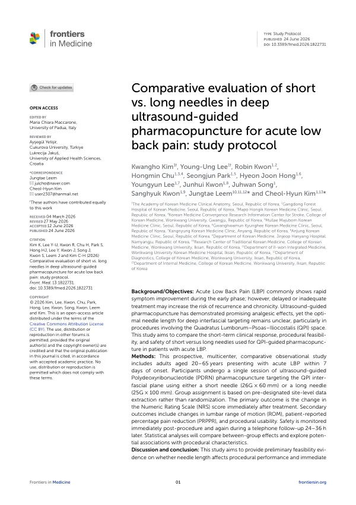

Comparative evaluation of short vs. long needles in deep ultrasound-guided pharmacopuncture for acute low back pain: study protocol
Kim K, Lee YU, Kwon R, Chu H, Park S, Hong HJ, Lee Y, Kwon J, Song J, Kwon S, Leem J, Kim CH
Frontiers in Medicine 13:1822731

첫 장 · 오픈액세스First page · open access
논문 소개Summary
급성 요통은 초기에 빠르게 좋아지는 편이지만 치료가 늦거나 모자라면 재발과 만성화의 위험이 커집니다. 2023년 기준 한의 의료기관 외래 진료비에서 가장 큰 몫을 차지한 두 상병이 요통과 요추 염좌였습니다. 그만큼 수요가 크고, 그만큼 시술의 표준이 필요합니다.
초음파 유도 약침은 진통 효과가 기대되지만 깊은 근막 사이를 겨냥할 때 바늘 길이를 얼마로 할지는 정해져 있지 않습니다. 특히 요방형근과 대요근, 장늑근이 이루는 공간을 목표로 삼을 때가 그렇습니다. 이 논문은 짧은 바늘과 긴 바늘을 견주는 연구의 프로토콜입니다.
20세부터 65세까지, 발병 7일 이내의 급성 요통 환자를 대상으로 하는 전향 다기관 비교 관찰연구입니다. 한 차례 시술로 초음파를 보며 폴리데옥시리보뉴클레오타이드 약침을 근막 사이 공간에 놓되, 26게이지 60밀리미터의 짧은 바늘과 25게이지 100밀리미터의 긴 바늘 가운데 하나를 씁니다. 군 배정은 무작위가 아니라 기관 단위로 미리 정해 둔 자료 추출 방식을 따릅니다. 일차 평가변수는 시술 직후 숫자평가척도의 변화이고, 이차로 요추 관절가동범위와 환자가 말하는 통증 감소 비율, 시술의 사용성을 봅니다. 안전성은 시술 직후와 24~36시간 뒤 전화로 확인합니다.
무작위 배정이 아니라는 점은 저자들도 감추지 않았습니다. 이 연구는 효과를 확정하려는 것이 아니라 바늘 길이가 시술의 수행과 즉각적인 진통 반응에 영향을 주는지에 대한 예비적 실행가능성 근거를 얻으려는 것입니다.
임상 결과와 시술 지표를 함께 본다는 점이 이 설계의 성격입니다. 잘 들었는가만이 아니라 시술자가 다루기에 어땠는가를 함께 물어야 바늘 선택의 기준이 나옵니다. 저자들은 이 결과가 표준적인 바늘 선택 기준을 세우고 뒤이을 무작위 대조시험을 설계하는 데 쓰이기를 기대한다고 적었습니다.
Acute low back pain tends to improve rapidly in its early phase, but delayed or inadequate treatment raises the risk of recurrence and chronicity. In 2023 the two conditions accounting for the largest share of outpatient expenditure at Korean medicine institutions were back pain and lumbar sprain. The demand is that large, and so is the need for procedural standards.
Ultrasound-guided pharmacopuncture shows promising analgesic effects, but the optimal needle length for targeting deep interfascial planes remains unsettled — particularly for the space formed by the quadratus lumborum, psoas and iliocostalis. This paper is the protocol for a study comparing a short needle with a long one.
It is a prospective, multicentre, comparative observational study in adults aged 20 to 65 presenting with acute low back pain within seven days of onset. A single session delivers ultrasound-guided polydeoxyribonucleotide pharmacopuncture to the interfascial plane using either a short needle (26G × 60 mm) or a long needle (25G × 100 mm). Group assignment follows pre-designated site-level data extraction rather than randomisation. The primary outcome is change in the Numeric Rating Scale immediately after treatment; secondary outcomes are lumbar range of motion, patient-reported percentage pain reduction, and procedural usability. Safety is checked immediately and again by telephone 24 to 36 hours later.
The authors do not conceal that assignment is not randomised. The study does not aim to establish efficacy but to obtain preliminary feasibility evidence on whether needle length affects procedural performance and the immediate analgesic response.
Looking at clinical and procedural measures together is what characterises this design. Criteria for choosing a needle emerge only if one asks not merely whether it worked but how it handled. The authors expect the findings to contribute to standardised needle-selection criteria and to support the randomised controlled trials that should follow.
인용Cite
Kim K, Lee YU, Kwon R, Chu H, Park S, Hong HJ, Lee Y, Kwon J, Song J, Kwon S, Leem J, Kim CH. Comparative evaluation of short vs. long needles in deep ultrasound-guided pharmacopuncture for acute low back pain: study protocol. Frontiers in Medicine. 2026;13:1822731. doi:10.3389/fmed.2026.1822731